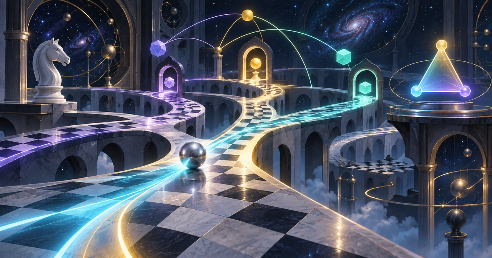

🐒♟️ PG-13 MAX · FUN CHESS STORY
Super Monkey
Chessballs
The Extra-Ball Gambit: a silver marble, a cheese wizard, a knight in a helmet, and one pawn with absolutely no intention of remaining a pawn.
PG-13 adventureCrazyhouse energyWings Out original

THE EXTRA-BALL GAMBIT
Captain Bananas enters the labyrinth.
In the high observatory above the clouds, a silver marble rolled across a chessboard bridge. Every square opened into another path: violet, cyan, gold, or completely ridiculous.
At the western gate stood Captain Bananas, a brave monkey with a knight’s helmet and one important rule:
“Never trust a quiet pawn.”
Across the labyrinth waited the Cheese Wizard, whose crown was made of three enormous chessballs—one ordinary, one extra, and one labeled EMERGENCY CHEESE.
The bell rang.
2. Nf3 Nc6
The board’s little lesson
In Crazyhouse, captured pieces return as new possibilities. A quiet pawn can become a sudden drop, a king can be chased through its own shelter, and a move that looks silly can still carry a real threat. Keep looking for checks, captures, and ways to turn the opponent’s material into your next surprise.
Explore Chess Relaxation ↗ · Visit the silver-marble Formula Labyrinth ↗